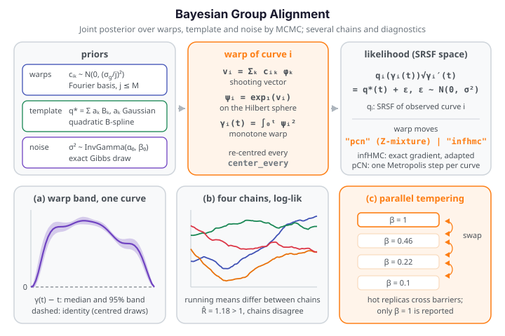

Bayesian Alignment¶
Every other aligner in fdars returns one warp per curve. That point estimate hides two things you sometimes need to know: how certain the timing is (a warp estimated from a flat stretch of curve is not), and whether the data support several different alignments (a curve with two similar peaks can be matched either way). Bayesian alignment answers both by sampling the posterior distribution of the warps, and of the template, by Markov chain Monte Carlo.
fdars has two samplers: bayesian_align_pair for one pair of curves, and bayesian_align_group, a port of fdasrsf's time_warping_bayes / time_warping_bayes_infHMC for a whole sample with a jointly estimated template, several chains, convergence diagnostics and parallel tempering.

Fourier tangent warps, a B-spline template and Gibbs \(\sigma^2\); check \(\hat R\) across chains, temper if stuck.
Group alignment: the model¶
bayesian_align_group(data, argvals, ...) models the SRSF of each curve, after warping, as a common template plus noise:
where \(q_i\) is the SRSF of curve \(i\) and \(q^*\) the template SRSF. Three blocks of unknowns are sampled jointly:
- Warps. Each warp is parametrised on the Hilbert sphere of \(\psi = \sqrt{\gamma'}\): \(\psi_i = \exp_1(v_i)\), \(\gamma_i(t) = \int_0^t \psi_i^2\), with the shooting vector \(v_i = \sum_k c_{ik}\phi_k\) in the Fourier tangent basis \(\sqrt2\sin(2\pi jt), \sqrt2\cos(2\pi jt)\), \(j = 1, \dots, M\) (
n_warp_harmonics, default 10). The prior is \(c_{ik} \sim N\bigl(0, (\sigma_g / j)^2\bigr)\) with \(\sigma_g\) =warp_prior_sd(default 4), so higher harmonics are shrunk harder. - Template. A quadratic B-spline \(q^* = \sum_k a_k B_k\) with
n_template_basisfunctions (default 30) and prior \(a_k \sim N\bigl(0, (\sigma_q/\lceil k/2\rceil)^2\bigr)\), \(\sigma_q\) set from the spread of the observed SRSFs. - Noise. \(\sigma^2 \sim \text{InvGamma}(\alpha_0, \beta_0)\) (
alpha0,beta0, default 0.1 each), drawn exactly by a Gibbs step.
Warps and template are only identified up to a common warp; every center_every iterations (default 100) the warps are re-centred so that their Karcher mean is the identity, and by default (center_draws=True) every retained draw is re-centred exactly before it is summarised. The chains start from the DP alignment (init_dp=True; fdasrsf starts at the identity).
Two samplers¶
sampler="pcn"(default): a Z-mixture preconditioned Crank–Nicolson proposal \(c' = \sqrt{1-\beta^2}\,c + \beta\,\xi\), \(\xi\) drawn from the prior, with \(\beta\) drawn from a mixture (pcn_betas= 0.5, 0.5, 0.005, 0.0001 with probabilitiespcn_probs= 0.1, 0.1, 0.7, 0.1): small steps explore locally, large ones jump. One Metropolis–Hastings step per curve per iteration. Cheap per iteration, but it mixes slowly when the posterior is concentrated.sampler="infhmc": infinite-dimensional Hamiltonian Monte Carlo (Beskos et al. 2011) for each curve's warp coefficients, with the exact gradient of the SRSF likelihood: the Gaussian prior part of the dynamics is integrated exactly by a rotation, the likelihood enters through half kicks, the number of leapfrog steps is drawn from \(1, \dots,\)hmc_max_leapfrog, and per-curve step sizes are adapted by dual averaging during burn-in (Hoffman & Gelman 2014). The template is drawn exactly from its Gaussian full conditional. infHMC always restricts warps to \(\lVert v\rVert < \pi\) (injective_warps). It targets the same posterior as pCN with a much higher effective sample size per iteration.
Several chains and the diagnostics¶
With n_chains = K, chain \(k\) runs with seed seed + k (in parallel; results do not depend on the thread count). The result reports:
| Diagnostic | Meaning | Look for |
|---|---|---|
rhat_sigma2, rhat_log_likelihood, rhat_warps (per curve) |
split-\(\hat R\) (BDA3 form); a single chain is split into halves | \(\le 1.01\)–\(1.05\) |
ess_sigma2, ess_log_likelihood, ess_warps |
Geyer effective sample size, summed over chains | hundreds or more |
mode_spread (per curve) |
largest \(L^2\) distance between the chains' mean warps | below about 0.01 |
warp_bimodality, multimodal_curves |
Sarle's bimodality coefficient of each curve's pooled draws (≈ 1/3 for a Gaussian), flagged above 5/9 | flags = chains in different modes, or a genuinely bimodal warp |
chains[k] |
per-chain log_likelihood_trace, sigma2_trace, posterior_mean_gammas, mode, acceptance, warp_step_sizes, swap_acceptance |
a chain whose log-likelihood sits tens of units below the others is in a poor mode |
The summaries are pooled over chains: gammas (posterior mean in \(\psi\) space), gammas_median, pointwise gammas_lower / gammas_upper at credible_level, aligned_data, the template (template, template_srsf, with bands) and \(\sigma^2\) (sigma2_mean, _lower, _upper). With return_draws=True (default) the draws themselves are returned (gamma_draws of shape \((n, \text{draws}, m)\), template_srsf_draws, sigma2_draws).
Example: reading the diagnostics¶
Eight noisy two-bump curves with smooth random warps. The posterior is run with infHMC, four chains and four warp harmonics, on the raw curves and on pre-smoothed curves:
import numpy as np
from docs_fig import fast
from fdars import alignment as A
rng = np.random.default_rng(0)
n, m = 8, 51
t = np.linspace(0, 1, m)
mu = lambda s: np.exp(-(s - 0.35) ** 2 / 0.01) + 0.7 * np.exp(-(s - 0.68) ** 2 / 0.012)
X = np.array([mu(t + rng.uniform(-0.5, 0.5) * t * (1 - t)) + 0.02 * rng.standard_normal(m) for _ in range(n)])
Xs = np.asarray(A.srsf_presmooth(X, t, smoothing="box", passes=25))
def report(label, r):
ll = [np.mean(c["log_likelihood_trace"]) for c in r["chains"]] # retained draws
print(f"{label:30s} Rhat sigma2 {r['rhat_sigma2']:.3f} loglik {r['rhat_log_likelihood']:.3f}"
f" warps(max) {np.max(r['rhat_warps']):.3f} mode_spread(max) {np.max(r['mode_spread']):.4f}")
print(f"{'':30s} chain mean log-likelihoods {np.round(ll, 1)}")
common = dict(n_iter=fast(3000, 1500), burn_in=fast(1500, 750), n_chains=4, sampler="infhmc",
n_warp_harmonics=4, return_draws=False)
report("raw curves", A.bayesian_align_group(X, t, **common))
report("pre-smoothed (box, 25 passes)", A.bayesian_align_group(Xs, t, **common))
print("FDARS_FENCE_OK")
raw curves Rhat sigma2 1.054 loglik 1.133 warps(max) 1.799 mode_spread(max) 0.0221
chain mean log-likelihoods [-216.9 -203.6 -212.9 -208.6]
pre-smoothed (box, 25 passes) Rhat sigma2 1.008 loglik 1.006 warps(max) 1.041 mode_spread(max) 0.0020
chain mean log-likelihoods [182.6 184.3 186.4 180.4]
FDARS_FENCE_OK
On the raw curves the chains disagree: \(\hat R\) is clearly above 1, mode_spread above 0.01, and the chains' average log-likelihoods differ by more than ten units, so they explore different joint modes (some curves aligned to slightly different features, with the template adapted to them). On pre-smoothed curves all diagnostics are fine. The reason is the likelihood: it is defined on the SRSF, which differentiates the data, so white noise in the curves becomes rough, heavy-tailed noise in \(q\) that creates many small local modes. The crate's documentation recommends modest grids and pre-smoothed curves for exactly this reason.
pCN or infHMC?¶
On the pre-smoothed sample, both samplers at the same number of iterations:
import time
import numpy as np
from docs_fig import fast
from fdars import alignment as A
rng = np.random.default_rng(0)
n, m = 8, 51
t = np.linspace(0, 1, m)
mu = lambda s: np.exp(-(s - 0.35) ** 2 / 0.01) + 0.7 * np.exp(-(s - 0.68) ** 2 / 0.012)
X, H = [], []
for _ in range(n):
w = t + rng.uniform(-0.5, 0.5) * t * (1 - t)
X.append(mu(w) + 0.02 * rng.standard_normal(m))
H.append(np.interp(t, w, t)) # true registering warp
X, H = np.array(X), np.array(H)
Xs = np.asarray(A.srsf_presmooth(X, t, smoothing="box", passes=25))
inner = (t > 0.1) & (t < 0.9)
n_iter, burn = fast(3000, 1500), fast(1500, 750)
draws = 4 * (n_iter - burn)
for sampler in ("pcn", "infhmc"):
t0 = time.perf_counter()
r = A.bayesian_align_group(Xs, t, n_iter=n_iter, burn_in=burn, n_chains=4, sampler=sampler,
n_warp_harmonics=4, return_draws=False)
G = np.asarray(r["gammas"])
err = 1000 * np.abs(((G - G.mean(0)) - (H - H.mean(0)))[:, inner]).mean()
band = (np.asarray(r["gammas_upper"]) - np.asarray(r["gammas_lower"]))[:, inner].mean()
print(f"{sampler:6s} Rhat loglik {r['rhat_log_likelihood']:.3f} max Rhat warps {np.max(r['rhat_warps']):.3f}"
f" min ESS/draw (warps) {np.min(r['ess_warps']) / draws:.3f}"
f" 95% band width {band:.4f} warp error {err:.1f}e-3 ({time.perf_counter() - t0:.1f} s)")
print("FDARS_FENCE_OK")
pcn Rhat loglik 1.639 max Rhat warps 1.303 min ESS/draw (warps) 0.004 95% band width 0.0132 warp error 3.4e-3 (0.4 s)
infhmc Rhat loglik 1.006 max Rhat warps 1.041 min ESS/draw (warps) 0.037 95% band width 0.0136 warp error 4.1e-3 (1.1 s)
FDARS_FENCE_OK
pCN is two to three times faster per iteration, but its slowest-mixing warp has roughly a tenth of infHMC's effective sample size per draw, and its \(\hat R\) for the log-likelihood shows it has not converged. infHMC is the better default whenever you report the posterior; use pCN only with long chains and checked diagnostics. Both posterior-mean warps are close to the truth here (the DP point estimate of the same curves has a warp error of about \(5\times10^{-3}\)).
Multimodality and parallel tempering¶
infHMC (and, more slowly, pCN) moves locally: a chain can settle in a poor, well-separated joint mode and never leave it. The diagnostics above detect this; the principled remedy is parallel tempering (Geyer 1991). With n_temperatures = K > 1, each chain runs \(K\) replicas at inverse temperatures \(1 = \beta_0 > \dots > \beta_{K-1} =\) pt_min_inv_temp, spaced geometrically (\(\beta_k = \beta_{\min}^{k/(K-1)}\)). Replica \(k\) targets the likelihood raised to \(\beta_k\) times the prior, so the hot replicas see a flatter posterior and cross barriers; after every sweep, adjacent replicas swap states with an exact Metropolis–Hastings acceptance. Only the \(\beta = 1\) replica is reported, so the posterior is unchanged. The cost is linear in \(K\).
chains[k]["swap_acceptance"] sizes the ladder: a rate near 0 for a pair of temperatures means the replicas cannot exchange there. The number of temperatures needed grows roughly with \(\sqrt{n\,T}\) (the log-likelihood fluctuations grow with the number of observations), so larger problems need longer or narrower ladders.
import numpy as np
from docs_fig import fast
from fdars import alignment as A
rng = np.random.default_rng(0)
n, m = 8, 51
t = np.linspace(0, 1, m)
mu = lambda s: np.exp(-(s - 0.35) ** 2 / 0.01) + 0.7 * np.exp(-(s - 0.68) ** 2 / 0.012)
X = np.array([mu(t + rng.uniform(-0.5, 0.5) * t * (1 - t)) + 0.02 * rng.standard_normal(m) for _ in range(n)])
common = dict(n_iter=fast(3000, 1000), burn_in=fast(1500, 500), n_chains=4, sampler="infhmc", return_draws=False)
for label, kw in [("no tempering", {}),
("6 temperatures, beta_min 0.1", dict(n_temperatures=6)),
("12 temperatures, beta_min 0.3", dict(n_temperatures=12, pt_min_inv_temp=0.3))]:
r = A.bayesian_align_group(X, t, **common, **kw)
ll = [np.mean(c["log_likelihood_trace"]) for c in r["chains"]] # retained draws
swaps = r["chains"][0]["swap_acceptance"]
print(f"{label:30s} Rhat loglik {r['rhat_log_likelihood']:.3f} chain log-lik spread {np.ptp(ll):5.1f}"
+ (f" swap rates chain 0: {np.round(swaps, 2)}" if len(swaps) else ""))
print("FDARS_FENCE_OK")
no tempering Rhat loglik 1.179 chain log-lik spread 14.3
6 temperatures, beta_min 0.1 Rhat loglik 1.575 chain log-lik spread 35.6 swap rates chain 0: [0. 0. 0. 0.01 0.23]
12 temperatures, beta_min 0.3 Rhat loglik 1.094 chain log-lik spread 4.0 swap rates chain 0: [0.29 0.35 0.3 0.33 0.27 0.35 0.37 0.42 0.27 0.37 0.3 ]
FDARS_FENCE_OK
The default ladder (6 temperatures down to \(\beta = 0.1\)) is too coarse for this problem: the swap rates between the coldest replicas are essentially 0, so the \(\beta = 1\) chain never receives a state from the hot replicas and tempering cannot help. A narrower, longer ladder (12 temperatures down to 0.3) swaps at rates of about 0.3 throughout and brings the chains much closer together (\(\hat R\) 1.09, log-likelihood spread 4 instead of 14), at twelve times the cost. (Here, pre-smoothing fixes the problem more cheaply; tempering is for posteriors that are genuinely multimodal.)
When may a chain be discarded?
Only when its log-likelihood is lower by tens of units than that of the other chains and the other chains agree with each other: its mode then carries negligible posterior mass (weight about \(e^{-\text{gap}}\)). If chains split between modes of similar log-likelihood, the posterior itself is multimodal and every mode must be kept.
Calibration: what the bands mean¶
The crate's own simulation study (data simulated from the model, 5 curves × 31 points) found nominal-95 % pointwise bands to cover the centred warps 0.93–0.96 of the time and the template 0.91–0.95, for infHMC and for long pCN runs. Three caveats remain:
- \(\sigma^2\) is underestimated when the noise is large (posterior/true ratio 0.90 at SRSF noise 0.1, 0.74 at 0.3), because the likelihood evaluates a linear interpolant of the noisy SRSF at the warped points; warps can lower the residual by "smoothing" the noise. Bands come out slightly narrow.
- Noise in the curves, not in the SRSF (the usual case): the SRSF noise is then heteroscedastic, correlated and heavy-tailed where \(f' \approx 0\), and warp bands covered only 0.83–0.87. Treat them as approximate; prefer modest grids and pre-smoothed curves.
- The \(\sigma^2\) prior matters when the noise is small: fdasrsf's \(\beta_0 = 0.1\) adds about \(2\beta_0/(nT)\) to the posterior \(\sigma^2\), which widens the bands (over-coverage). Lower
alpha0andbeta0(for example \(10^{-6}\)) when the SRSF noise is known to be small.
Raw-state bands (center_draws=False, fdasrsf's convention) include the non-identified common warp and over-cover (about 0.98).
Recommended settings¶
sampler="infhmc",n_chains >= 4; read \(\hat R\), ESS,mode_spreadandmultimodal_curvestogether before using the bands.- Pre-smooth noisy curves (
srsf_presmooth), and keep \(m\) moderate (50–100 points;n_pointsresamples internally). - Fewer warp harmonics (
n_warp_harmonics3–5) when the phase is smooth: fewer parameters, faster mixing. - Add tempering (
n_temperatures > 1) when chains disagree on smoothed data; checkswap_acceptance(aim for roughly 0.2–0.4 between neighbours) and add temperatures or raisept_min_inv_tempif a pair is near 0. - Increase
n_iter/burn_inuntil the diagnostics settle;thinonly saves memory.
Pairwise posterior: bayesian_align_pair¶
For a single pair, bayesian_align_pair(f1, f2, argvals, n_samples=1000, burn_in=200, step_size=0.1, proposal_variance=1.0, seed=42) samples the posterior of the warp \(\gamma\) that aligns f2 to f1, with likelihood \(-\tfrac12\sum_j w_j\bigl(q_{1}(t_j) - (q_2\circ\gamma)(t_j)\sqrt{\gamma'(t_j)}\bigr)^2\) (Simpson weights) and a pCN proposal \(v' = \sqrt{1-\beta^2}\,v + \beta\,\xi\) on the tangent space of the \(\psi\) sphere (\(\beta\) = step_size), started from the DP alignment.
Limits of the pairwise sampler
The noise variance is fixed at 1, so the band width depends on the scale of the data (rescale the curves and the band changes). It runs a single chain with no convergence diagnostics, and the credible band is the fixed 2.5 %–97.5 % range of the draws. For calibrated uncertainty use bayesian_align_group, which samples the noise variance, runs several chains and reports \(\hat R\) and ESS.
import numpy as np
from docs_fig import fig, render
from fdars.alignment import bayesian_align_pair
t = np.linspace(0, 1, 120)
base = np.exp(-((t - 0.5) ** 2) / (2 * 0.10 ** 2))
f1 = base
f2 = np.interp(t, np.clip(t + 0.08, 0, 1), base) # phase-shifted target
ba = bayesian_align_pair(f1, f2, t, n_samples=500, burn_in=100, seed=0, step_size=0.85)
f2_aligned = np.asarray(ba["f_aligned_mean"])
gam_lo = np.asarray(ba["credible_lower"])
gam_hi = np.asarray(ba["credible_upper"])
gam_mean = np.asarray(ba["posterior_mean_gamma"])
f, (a1, a2) = fig(ncols=2, figsize=(9.5, 4.0))
a1.plot(t, f1, color="#6c757d", lw=2, label="f1 (reference)")
a1.plot(t, f2, color="#dc3545", lw=1.6, ls="--", label="f2 (original)")
a1.plot(t, f2_aligned, color="#3f51b5", lw=2, label="f2 (aligned)")
a1.set(title=f"Bayesian alignment (accept. {float(ba['acceptance_rate']):.2f})",
xlabel="t", ylabel="f(t)")
a1.legend(fontsize=8)
a2.fill_between(t, gam_lo, gam_hi, color="#6f42c1", alpha=0.2, label="95% credible")
a2.plot(t, gam_mean, color="#6f42c1", lw=2, label="posterior mean $\\gamma$")
a2.plot([0, 1], [0, 1], color="#6c757d", ls="--", lw=1.2)
a2.set(title="Posterior over the warp", xlabel="t",
ylabel="$\\gamma(t)$", aspect="equal")
a2.legend(fontsize=8)
print(render(f))
The left panel shows the aligned f2 tracking the reference; the right panel replaces the point-estimate warp with a posterior: the band is the 95 % credible region around the posterior-mean \(\gamma\). Where the band hugs the mean, the timing is well determined; where it widens (in the flat tails, where the curves carry no timing information) the data are ambiguous about how much to warp.
| Key | Description |
|---|---|
posterior_gammas |
MCMC draws of the warp, shape (n_samples, m) |
posterior_mean_gamma |
posterior mean warp |
credible_lower / credible_upper |
pointwise 2.5 % / 97.5 % band on the warp |
acceptance_rate |
MCMC acceptance rate; lower step_size if it is too low, raise it if too high |
f_aligned_mean |
f2 aligned under the posterior-mean warp |
Parameters of bayesian_align_group¶
| Parameter | Default | Effect |
|---|---|---|
n_iter, burn_in, thin |
2000, 1000, 1 | chain length, discarded burn-in, thinning |
n_chains, seed |
1, 42 | chains (seed + k) |
sampler |
"pcn" |
or "infhmc" |
alpha0, beta0 |
0.1, 0.1 | inverse-gamma prior on \(\sigma^2\) |
warp_prior_sd, n_warp_harmonics |
4.0, 10 | warp prior scale and Fourier size |
n_template_basis |
30 | template B-splines |
n_points |
0 | internal grid (0 = the input grid; fdasrsf uses 200) |
center_every, center_draws |
100, True |
re-centring of states and of retained draws |
credible_level |
0.95 | pointwise band level |
init_dp |
True |
start from the DP alignment |
pcn_betas, pcn_probs |
(0.5, 0.5, 0.005, 0.0001), (0.1, 0.1, 0.7, 0.1) | Z-mixture pCN |
hmc_step_size, hmc_max_leapfrog, hmc_adapt, hmc_target_accept |
0.1, 10, True, 0.65 |
infHMC controls |
injective_warps |
False |
restrict to \(\lVert v\rVert < \pi\) (always on for infHMC) |
n_temperatures, pt_min_inv_temp |
1, 0.1 | parallel tempering |
return_draws |
True |
False drops the large draw arrays |
When to use it¶
- Use it when you must report uncertainty in the warps or the template, or when you suspect several plausible alignments (similar repeated features).
- Use a point estimate (elastic Karcher mean) when you only need registered curves: it is faster and, for well-determined warps, nearly identical to the posterior mean.
- Cost. Each iteration updates every warp (pCN: one likelihood evaluation each; infHMC: up to
hmc_max_leapfroggradient evaluations), times the number of replicas and chains. The examples above take about a second per run; samples of hundreds of curves on fine grids take much longer.
See also¶
- Elastic Alignment — the point-estimate counterpart.
- Inference after Alignment — box plots, tests and conformal sets built on aligned data.
- Uncertainty Quantification.
References¶
- Lu, Y., Herbei, R., Kurtek, S. (2017). Bayesian registration of functions with a Gaussian process prior. Journal of Computational and Graphical Statistics 26(4), 894–904.
- Cheng, W., Dryden, I.L., Huang, X. (2016). Bayesian registration of functions and curves. Bayesian Analysis 11(2), 447–475.
- Beskos, A., Pinski, F. J., Sanz-Serna, J. M., Stuart, A. M. (2011). Hybrid Monte Carlo on Hilbert spaces. Stochastic Processes and their Applications 121(10), 2201–2230.
- Hoffman, M. D., Gelman, A. (2014). The No-U-Turn Sampler: adaptively setting path lengths in Hamiltonian Monte Carlo. Journal of Machine Learning Research 15, 1593–1623.
- Geyer, C. J. (1991). Markov chain Monte Carlo maximum likelihood. In Computing Science and Statistics: Proceedings of the 23rd Symposium on the Interface, 156–163.
- Gelman, A., Carlin, J. B., Stern, H. S., Dunson, D. B., Vehtari, A., Rubin, D. B. (2013). Bayesian Data Analysis, 3rd ed. CRC Press.